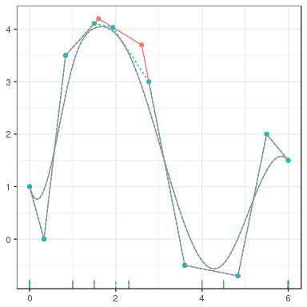

- Motivation
- Control Polygon Reduction
- cpr package
21 April 2017
Outline
Motivation and Proposed Modeling Approach
Separating Aging from Menopause
- Motivated by a need to answer questions about aging and menopause.
- How do reproductive hormone profiles change during the menopausal transition?
- What is the interaction between age and time-to-menopause?
- How do we model hormone profiles to allow for inference on the complex interactions between day-of-cycle, age, and time-to-menopause?
- Study of Women's Health Across the Nation (SWAN)
 Daily Hormone Study (DHS)
Daily Hormone Study (DHS)
- First evacuation urine sample every day for a full menstrual cycle.
- One cycle per year; stop collection one year post menopause or end of study.
Proposed Modeling Approach
Need a model to inform the relationship between reproductive hormone profiles with day, age, and time-to-menopause (TTM).
- Current analysis methods in the literature:
- Singleton metrics, e.g., AUC, peak level, cycle length, …
- Fail to capture the functional form of the hormone profiles
Proposed Modeling Approach: \[ PDG \approx f(day, age, ttm) \] Model \(f\) via multi-variable B-splines.
B-Splines
An appropriate method for modeling unknown functional forms.
Subject to the selection of a polynomial order and knot sequences
Multi-variable B-splines can require a lot of degrees of freedom.
Need to find a method for finding parsimonious regression models with a high quality of fit.
Parsimony to alleviate over-fitting.
Start with uni-variable B-splines and extend to multi-variable B-splines.

Control Polygon Reduction
Introduction
Consider the regression model \[\bs{y} = f \left( \bs{x} \right) + \bs{Z}_{f} \bs{\beta} + \bs{Z}_{r} \bs{b} + \bs{\epsilon}\]
- Goals:
- Model \(f\) via uni-variable B-splines.
- Regression model needs to be parsimonious (low degree of freedom).
- Challenges:
- B-splines are defined by polynomial order and a knot sequences.
- Given a loss function and polynomial order, no analytic solution exists for optimal a knot sequences.
- Model selection need to be efficient, i.e., good fits, quickly.
Quick B-spline Review
\[f(x) = \bs{B}_{k, \bs{\xi}} \left(x\right) \bs{\theta}_{\bs{\xi}} = \sum_{j=1}^{k = l} \theta_{\bs{\xi}, j} B_{j, k, \bs{\xi}} \left(x\right)\]
- The matrix \(\bs{B}_{k, \bs{\xi}} \left( x \right)\) is defined by de Boor's algorithm.
- Polynomial order \(k,\) (degree = \(k -1\)).
- Knot sequences \(\bs{\xi}\) with \(k\)-fold boundary knots and \(l \geq 0\) interior knots.
\(\bs{\theta}_{\bs{\xi}}\) is a \(\left(k + l\right) \times 1\) column vector of regression coefficients.
Control Polygons: Convex hull for \(\bs{B}_{k, \bs{\xi}} \left( x \right) \bs{\theta}_{\bs{\xi}}\)
\[CP_{k, \bs{\xi}, \bs{\theta}_{\bs{\xi}}} = \left\{ \left( \xi_{j}^{*}, \theta_{\bs{\xi}, j} \right) \right\}_{j=1}^{n\left(\bs{\xi}\right) - k}, \quad \xi_{j}^{*} = \frac{1}{k-1} \sum_{i = 1}^{k-1} \xi_{j + i}\]
Example B-spline Basis and Spline function
bmat <- bsplines(x = seq(0, 6, length = 500), iknots = c(1.0, 1.5, 2.3, 4.0, 4.5)) theta <- c(1, 0, 3.5, 4.2, 3.7, -0.5, -0.7, 2, 1.5) eg_cp <- cp(bmat, theta)
plot(bmat) # # #

grid.arrange(plot(eg_cp, show_spline = TRUE, show_cp = FALSE),
plot(eg_cp),
plot(eg_cp, show_spline = TRUE),
nrow = 1)
Control Polygon Reduction (CPR)
- General Idea
- Assume that \(f\left(x\right)\) can be adequately modeled by \(\bs{B}_{k, \bs{\xi}} \left( x \right) \bs{\theta}_{\bs{\xi}}\).
- Start search for \(\bs{\xi}\) within a larger sequence \(\bs{\xi} \cup \bs{\xi}'.\)
- CPR is a backward-step model selection process.
- Remove the least influential knot at each step.
- Need a metric for assessing the influence of a knot.
Assessing the Influence of a Knot
Add elements to the knot sequence without affecting the spline function (Boehm 1980).
Specifically, for \(\bs{\xi} \text{ and } \bs{\xi} \cup \xi',\)
\[\bs{B}_{k, \bs{\xi}}\left(x \right) \bs{\theta}_{\bs{\xi}} = \bs{B}_{k, \bs{\xi} \cup \xi'}\left(x \right) \bs{\theta}_{\bs{\xi} \cup \xi'}\]
- The relationship between \(\bs{\theta}_{\bs{\xi}\cup\xi'}\) and \(\bs{\theta}_{\bs{\xi}}\) is defined by a lower bi-diagonal matrix \[\bs{\theta}_{\bs{\xi}\cup\xi'} = \bs{W}_{k, \bs{\xi}} \left( \xi' \right) \bs{\theta}_{\bs{\xi}}\]

bmat_boehm <- update_bsplines(bmat, iknots = sort(c(attr(bmat, "iknots"), 2.0))) theta_boehm <- insertion_matrix(2.0, attr(bmat, "xi")) %*% theta plot(cp(bmat, theta), cp(bmat_boehm, theta_boehm), show_spline = TRUE, color = TRUE) + theme(legend.position = "none")
Influence Weight, \(w_j\), of \(\xi_j \in \bs{\xi}\) on \(\bs{B}_{k, \bs{\xi}}\left(x\right) \bs{\theta}_{\bs{\xi}}\)
\[ \begin{split} \bs{\theta}_{\bs{\xi}\backslash \xi_j} &= \left( \bs{W}^{T} \bs{W} \right)^{-1} \bs{W}^{T} \bs{\theta}_{\bs{\xi}} \\ \\ \bs{\theta}_{\left(\bs{\xi}\backslash \xi_j\right) \cup \xi_j} &= \bs{W} \bs{\theta}_{\bs{\xi}\backslash \xi_j} \\ &= \bs{W} \left( \bs{W}^{T} \bs{W} \right)^{-1} \bs{W}^{T} \bs{\theta}_{\bs{\xi}} \\ \\ w_{j} &= \left\lVert \bs{\theta}_{\bs{\xi}} - \bs{\theta}_{ \left(\bs{\xi} \backslash \xi_j \right) \cup \xi_j} \right\rVert_2 \\ &= \left\lVert \left( \bs{I} - \bs{W} \left( \bs{W}^T \bs{W} \right)^{-1} \bs{W}^T\right) \bs{\theta}_{\bs{\xi}} \right\rVert_2. \end{split} \]
\(w_{6} = 0.539, \quad w_{8} = 0.278\)
The Control Polygon Reduction Algorithm
- Start with a high cardinal knot sequences, say \(L = 50,\) and set \(l = L\) to index models.
- Use an appropriate regression modeling approach to estimate the control polygon ordinates.
- Construct the control polygon for the current \(\bs{\xi}_{l}\) and \(\bs{\theta}_{\bs{\xi}_{l}}\) estimate.
- Use \(CP_{k, \bs{\xi}_{l}, \bs{\theta}_{\bs{\xi}_l}}\) and find the influence weight for all internal knots.
- Coarsen the knot sequence by removing the knot with the smallest influence weight.
- Refit the regression model using the coarsened knot sequence and index \(l = l - 1.\)
- Repeat steps 3 through 6 until all internal knots have been removed, i.e., if \(l \geq 0\) go to 3, else go to 8.
- Select the preferable model by visual inspection of diagnostic graphics.
Idealized CPR Example
Selected Simulation Results

Median Time to Evaluate OLS
| method | Seconds |
|---|---|
| Bkwd | 33.4625 |
| CPR | 5.4940 |
| Frwd | 4.6250 |
| PSLN | 3.9185 |
| method | Seconds |
|---|---|
| Bkwd | 3542.3490 |
| CPR | 80.6855 |
| Frwd | 80.5255 |
| PSLN | 350.6555 |
Control Polygon Reduction
Conclusions
CPR is capable of identifying high quality of fit, parsimonious B-spline regression models, quickly.
Added bonuses of having a quick algorithm: Able to search over polynomial order.
Knots, by being in "good" locations, might have meaningful interpretations.
The CPR method generalizes to multi-variable B-splines via Control Net Reduction.
cpr: An R Package
cpr tools
The cpr package provides:
- A simulated data set based on SWAN DHS
- Tools for building and manipulating uni-variable and multi-variable B-splines.
- Tools for building and manipulating control polygons and control nets
- The
cprandcnrcalls for running the control polygon reduction and control net reduction. - Lots of plotting and diagnostic tools.
# Packages needed for the following examples library(cpr) library(tidyverse) library(lme4)
Simulated Data Set
str(spdg) ## Classes 'tbl_df', 'tbl' and 'data.frame': 24730 obs. of 9 variables: ## $ id : int 1 1 1 1 1 1 1 1 1 1 ... ## $ age : num 49.3 49.3 49.3 49.3 49.3 ... ## $ ttm : num -5.19 -5.19 -5.19 -5.19 -5.19 ... ## $ ethnicity : Factor w/ 5 levels "Caucasian","Black",..: 4 4 4 4 4 4 4 4 4 4 ... ## $ bmi : num 36.2 36.2 36.2 36.2 36.2 ... ## $ day_from_dlt: num -8 -7 -6 -5 -4 -3 -2 -1 0 1 ... ## $ day_of_cycle: int 1 2 3 4 5 6 7 8 9 10 ... ## $ day : num -1 -0.875 -0.75 -0.625 -0.5 ... ## $ pdg : num 0.2401 0.0668 0.1088 0.0733 0.0979 ...
Build The Initial Control Polygon
init_cp4 <- cp(log10(pdg) ~ bsplines(day, df = 54) + (1 | id),
data = spdg, method = lmer)
plot(init_cp4)
Run CPR
cpr_run4 <- cpr(init_cp4)
Select a Model
plot(cpr_run4, color = TRUE)

plot(cpr_run4, type = "rmse", to = 12)
cpr_run4 ## A list of control polygons ## List of 51 ## - attr(*, "class")= chr [1:2] "cpr_cpr" "list" selected_cp4 <- cpr_run4[[4]]
Selected CP
str(selected_cp4) ## List of 12 ## $ cp :Classes 'tbl_df', 'tbl' and 'data.frame': 7 obs. of 2 variables: ## ..$ xi_star: num [1:7] -1 -0.6889 -0.3703 0.0298 0.3854 ... ## ..$ theta : num [1:7] -0.0477 -0.4992 -0.5588 -0.1586 0.9388 ... ## $ xi : num [1:11] -1 -1 -1 -1 -0.0668 ... ## $ iknots : num [1:3] -0.0668 -0.0443 0.2006 ## $ bknots : num [1:2] -1 1 ## $ order : num 4 ## $ call : language cp(formula = log10(pdg) ~ bsplines(day, iknots = c(-0.0667568176695966, -0.0442920251104394, 0.200576701268743)) + (1 | id), data = spdg, ... ## $ keep_fit : logi FALSE ## $ fit : logi NA ## $ loglik : num 8523 ## $ rmse : num 0.155 ## $ coefficients: num [1:7] -0.0477 -0.4992 -0.5588 -0.1586 0.9388 ... ## $ vcov : num [1:7, 1:7] 1.23e-04 8.09e-05 1.15e-04 1.01e-04 1.08e-04 ... ## - attr(*, "class")= chr [1:2] "cpr_cp" "list"
Methods for cpr_cp Objects
methods(class = "cpr_cp") ## [1] cpr get_spline influence_of ## [4] influence_weights plot predict ## [7] print summary update_bsplines ## [10] wiggle ## see '?methods' for accessing help and source code
Other Orders
CPR is fast, consider other polynomial orders to help find parsimonious models.
init_cp3 <- update_bsplines(init_cp4, df = 53, order = 3) init_cp2 <- update_bsplines(init_cp4, df = 52, order = 2) cpr_run3 <- cpr(init_cp3) cpr_run2 <- cpr(init_cp2)
list(cpr_run4, cpr_run3, cpr_run2) %>%
lapply(summary) %>%
bind_rows(.id = "order") %>%
mutate(order = factor(order, 1:3, c("4th", "3rd", "2nd"))) %>%
filter(index < 13) %>%
ggplot() +
aes(x = dfs, y = rmse, color = order, linetype = order) +
geom_path() +
geom_point() # Graphic on the next slide
Summaries
# Preferable Model (index and dfs are not the same thing) cpr_run3[[3]]
Control Net Reduction
init_iknots <-
list(attr(cpr_run3[[3]], "iknots"),
trimmed_quantile(spdg$age, prob = 1:10 / 11, names = FALSE),
trimmed_quantile(spdg$ttm, prob = 1:10 / 11, names = FALSE))
init_cn322 <-
cn(log10(pdg) ~ btensor(list(day, age, ttm), iknots = init_iknots, order = list(3, 2, 2)) + (1 | id),
data = spdg,
method = lmer)
cnr_run <- cnr(init_cn322)
Control Net Reduction
plot(cnr_run)
Control Net Reduction
selected_cn <- cnr_run[[1]] str(selected_cn, max.level = 1) ## List of 9 ## $ cn :Classes 'tbl_df', 'tbl' and 'data.frame': 12 obs. of 4 variables: ## $ bspline_list:List of 3 ## $ call : language cn(formula = log10(pdg) ~ btensor(list(day, age, ttm), iknots = list(`1` = numeric(0), `2` = numeric(0), `3` = numeric(0)), order = list(3, 2, 2)) + ... ## $ keep_fit : logi FALSE ## $ fit : logi NA ## $ coefficients: num [1:12] -0.2663 -0.2135 0.7928 -0.4411 -0.0484 ... ## $ vcov : num [1:12, 1:12] 0.00216 0.0012 0.0018 -0.00181 -0.001 ... ## $ loglik : num -7160 ## $ rmse : num 0.3 ## - attr(*, "class")= chr [1:2] "cpr_cn" "list"
Control Net Reduction
plot(selected_cn,
xlab = "age", ylab = "ttm", zlab = "log10(pdg)",
show_net = FALSE, show_surface = TRUE,
get_surface_args = list(margin = 2:3, at = list(0.5, NA, NA)),
rgl = FALSE) # plots with rgl by default, plot3D if rgl = FALSE
Some Results from My Dissertation
Some Results from My Dissertation
Download cpr
cpr: Control Polygon Reduction
Detailed examples are in vignette and standard documentation files.
Please test the package. File bug reports at https://github.com/dewittpe/cpr/issues